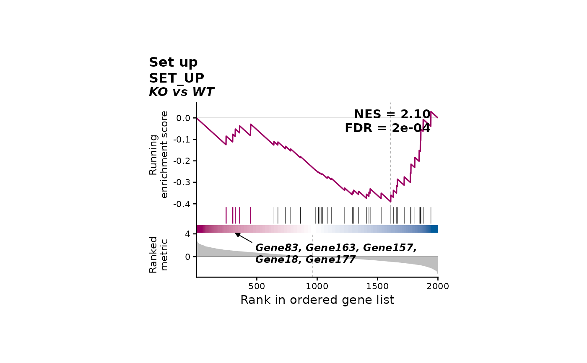

Draws the running enrichment score of one gene set along the
ranked gene list, the positions of the set's genes above a
band coloured by the ranking metric (where genes rank up or
down), and the ranking metric, with the NES and adjusted
p-value (FDR) of the set. Takes a clusterProfiler GSEA() result directly, or
fgsea (or any standardize_enrichment) results
with the ranked list and the gene sets. Panels have a fixed
size; save the plot with save_plot.
Usage
plot_gsea_rank(
gsea,
term,
stats = NULL,
gene.sets = NULL,
comparison = NULL,
title = NULL,
show.id = TRUE,
cols = NULL,
metric.title = "Ranked\nmetric",
show.metric = TRUE,
band = c("metric", "none"),
label = c("leading.edge", "selected", "none"),
label.n = 5,
label.features = NULL,
italic.genes = TRUE,
panel.width = 3,
panel.heights = c(1.3, 0.32, 0.55),
bg = "transparent",
...
)Arguments
- gsea
A clusterProfiler `gseaResult` (holds the ranked list and gene sets), or a GSEA results table (e.g. from
fgsea::fgsea()) or a named list of them, as read bystandardize_enrichment- term
The gene set: its ID (e.g. "GOBP_RESPONSE_TO_KETONE", "GO:1901654") or its name, original or cleaned (e.g. "Response to ketone"). When a name matches several gene sets, the most significant is drawn, with a message
- stats
The ranked list: a numeric vector of the ranking metric (e.g. log2 fold change, signed -log10 p-value) named by gene. Needed unless `gsea` is a `gseaResult`
- gene.sets
Gene sets: a named list of character vectors (names = the IDs in `gsea`, e.g. `pathway` of fgsea). Needed unless `gsea` is a `gseaResult`
- comparison
The comparison: when `gsea` holds several, the one to draw; otherwise only its name, written in the subtitle. Default is NULL
- title
Title. If NULL (default), the gene set's (cleaned) name
- show.id
Whether the subtitle gives the gene set's ID when it differs from its name, default is TRUE
- cols
Colours of the line and metric for a positive and a negative score: two colours (positive, negative), or named `up` / `down`. If NULL (default), the ends of "blue-magenta"
- metric.title
Title of the ranked metric's axis, default is "Ranked\nmetric". Name the metric when it helps, e.g. "log2 fold\nchange"
- show.metric
Whether to draw the ranked metric below the gene positions, default is TRUE. It is the same for every gene set of a comparison (the ranked list), so it can be left out of all but one figure
- band
What the band under the gene positions shows: "metric" (default) or "none". The band is the ranking metric along the list, as in the GSEA desktop plot: magenta where genes rank up (metric above 0), white around 0, blue where they rank down, saturating at the 95th percentile of |metric|. It is the same for every gene set of a comparison and shows where the list turns from up- to down-ranked genes. (The band of
enrichplot::gseaplot2()is different: it colours eight stretches of the list holding equal shares of the set's genes, by a count taken from the other end of the list, and encodes no value at the rank where it is drawn.)- label
Genes named on the plot, with an arrow to their ticks: "leading.edge" (default; the first `label.n` genes of the leading edge, counted from the end of the list the set is enriched at), "selected" (`label.features`) or "none". The leading edge is the set's genes ranked before the peak of a positive score (after the peak of a negative one), as in GSEA, fgsea and clusterProfiler. Named genes have taller ticks in the line colour
- label.n
Number of leading-edge genes named, default is 5
- label.features
Genes named with `label = "selected"`, matched exactly
- italic.genes
Whether gene names are set in italics, default is TRUE
- panel.width
Width of the panels in inches, default is 3
- panel.heights
Heights of the running score, gene position and metric panels in inches, default is `c(1.3, 0.32, 0.55)`
- bg
Background colour, default is "transparent"
- ...
Arguments to
standardize_enrichmentfor a table (e.g. `comparison.col`)
Value
A patchwork object; its source data
(export_source_data) hold one row per gene: `rank`,
`gene`, `metric`, `running_es`, `in_set`, `leading_edge` and
`labelled`
Examples
set.seed(1)
genes <- paste0("Gene", 1:2000)
stats <- sort(stats::setNames(rnorm(2000), genes), decreasing = TRUE)
sets <- list(SET_UP = sample(genes[1:300], 40), SET_RANDOM = sample(genes, 40))
res <- data.frame(pathway = names(sets), pval = c(1e-4, 0.6), padj = c(2e-4, 0.6),
ES = NA, NES = c(2.1, 0.4), size = 40)
plot_gsea_rank(res, "SET_UP", stats = stats, gene.sets = sets, comparison = "KO vs WT")
